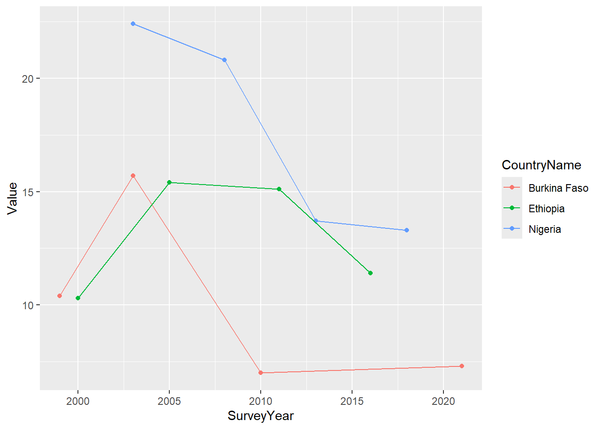

install.packages("rdhs", repos="https://cloud.r-project.org")
install.packages("dplyr", repos="https://cloud.r-project.org")
install.packages("ggplot2", repos="https://cloud.r-project.org")
install.packages("haven", repos="https://cloud.r-project.org")
library(rdhs)
library(dplyr)
library(ggplot2)
library(haven)RDHS package usage example
Introduction
Setup
Search for relevant indicators
indicators <- dhs_indicators()indicators %>%
filter(grepl("Family planning", Label)) %>%
select(IndicatorId, ShortName, Label) %>%
tail() IndicatorId ShortName
35 FP_DMKP_W_WFM Wife's opinion more important
36 FP_DMKP_W_WHE Wife's and husband's/partner's opinion equally important
37 FP_DMKP_W_WFL Wife's opinion less important than husband's/partner's
38 FP_DMKP_W_MHS Mainly husband
39 FP_DMKP_W_OTH Someone else/other
40 FP_DMKP_W_TOT Total
Label
35 Family planning decisionmaking jointly: Wife's opinion more important
36 Family planning decisionmaking jointly: Wife's and husband's/partner's opinion equally important
37 Family planning decisionmaking jointly: Wife's opinion less important than husband's/partner's
38 Family planning decisionmaking mainly by husband
39 Family planning decisionmaking by someone else/other
40 Family planning decisionmaking: TotalFind the countries to work with
countries <- dhs_countries()
dhscc <- countries %>%
filter(CountryName %in% c("Nigeria", "Ethiopia", "Burkina Faso")) %>%
select(DHS_CountryCode)
dhscc$DHS_CountryCode[1] "BF" "ET" "NG"Look for Family planning messages in newspapers or magazines as indicator
statcomp <- dhs_data(indicatorIds = "FP_EFPM_M_NWS", countryIds = dhscc$DHS_CountryCode) %>%
select(Indicator, CountryName, SurveyYear, Value, DenominatorWeighted)
ggplot(statcomp, aes(SurveyYear, Value, col=CountryName)) +
geom_point() + geom_line()
Search Survey using survey characteristics
surveychar <- dhs_survey_characteristics()
surveychar %>% filter(grepl("Pregnancy", SurveyCharacteristicName)) SurveyCharacteristicID SurveyCharacteristicName
1 30 Pregnancy historysurveys <- dhs_surveys(surveyCharacteristicIds = 30, countryIds = dhscc$DHS_CountryCode)
s1 <- surveys %>% select(SurveyId, CountryName, SurveyYear, NumberOfWomen, SurveyNum, FieldworkEnd)
print(s1) SurveyId CountryName SurveyYear NumberOfWomen SurveyNum FieldworkEnd
1 BF2021DHS Burkina Faso 2021 17659 562 2021-12-01Download data
To download datasets we need to first log in to our DHS account, by providing our credentials and setting up our configuration using set_rdhs_config(). This will require providing as arguments your email and project for which you want to download datasets from. You will then be prompted for your password. You can also specify a directory for datasets and API calls to be cached to using cache_path. In order to comply with CRAN, this function will also ask you for your permission to write to files outside your temporary directory, and you must type out the filename for the config_path - “rdhs.json”. (See introduction vignette for specific format for config, or ?set_rdhs_config).
set_rdhs_config(email = "you@email.com", project = "My DHS project")Get Dataset
After this the function get_datasets() returns a list of file paths where the desired datasets are saved in the cache. The first time a dataset is accessed, rdhs will download the dataset from the DHS program website using the supplied credentials. Subsequently, datasets will be simply be located in the cached repository.
datasets <- dhs_datasets(surveyIds = surveys$SurveyId, fileType = "IR", fileFormat="flat")
datasets$path <- unlist(get_datasets(datasets$FileName))Work with Micro-level dataset
# search for columns with variable labels
head(search_variable_labels(datasets$FileName[1], "Age at death")[,1:2]) variable description
1 b6_01 Age at death
2 b6_02 Age at death
3 b6_03 Age at death
4 b6_04 Age at death
5 b6_05 Age at death
6 b6_06 Age at death # read dataset
ir <- readRDS(datasets$path[1])
# get recode label
ir <- ir %>%
mutate(b6_01_label = factor(b6_01, levels = attributes(b6_01)$labels, labels = names(attributes(b6_01)$labels)))
ir %>%
group_by(b6_01_label) %>%
summarise(count = n())# A tibble: 4 × 2
b6_01_label count
<fct> <int>
1 died on day of birth 50
2 days: 1 51
3 months: 1 24
4 <NA> 17534